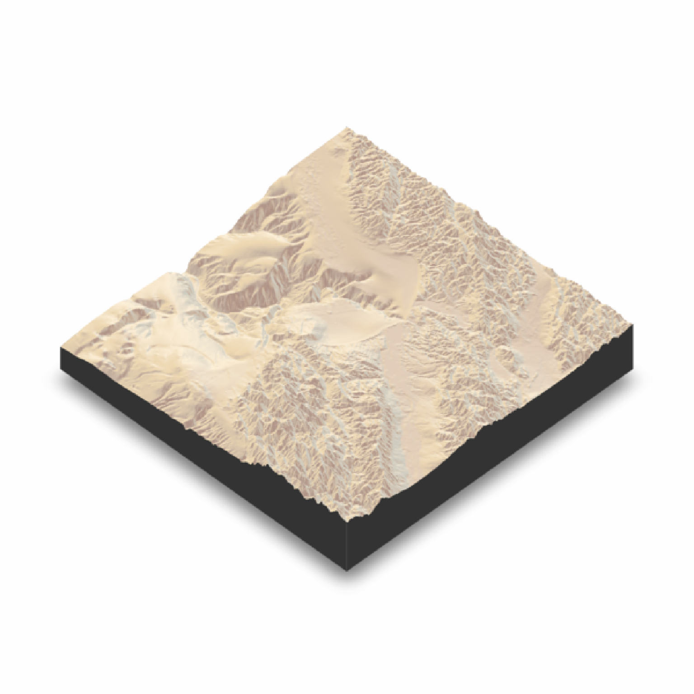
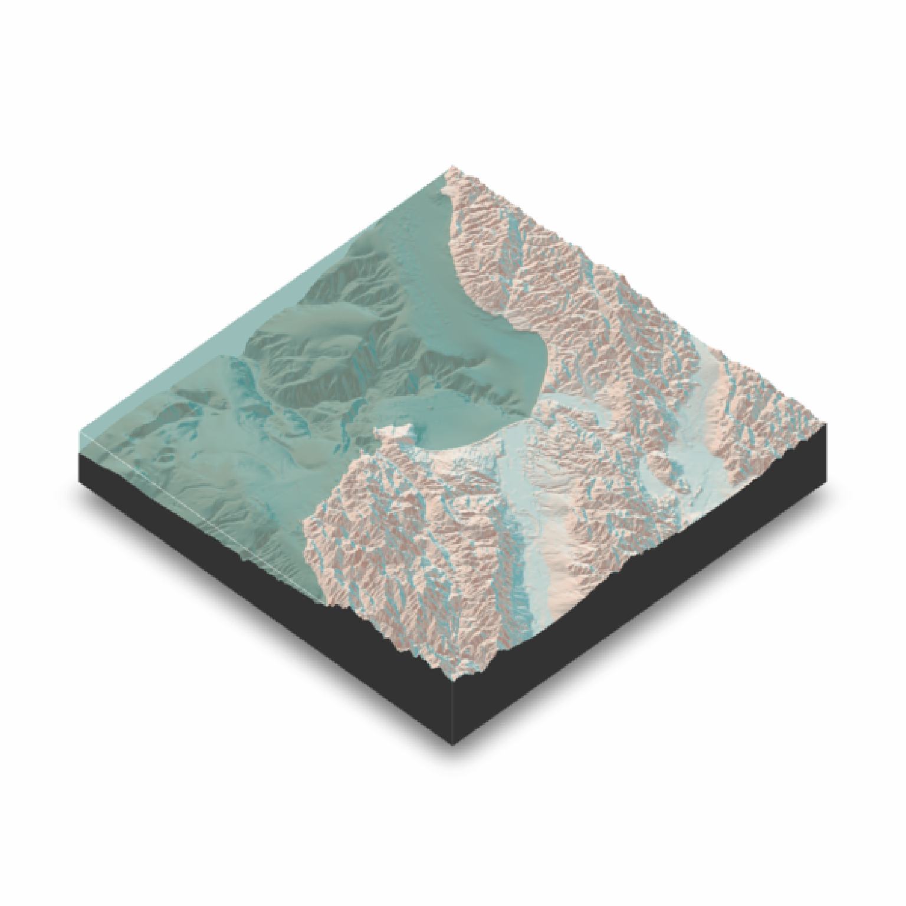
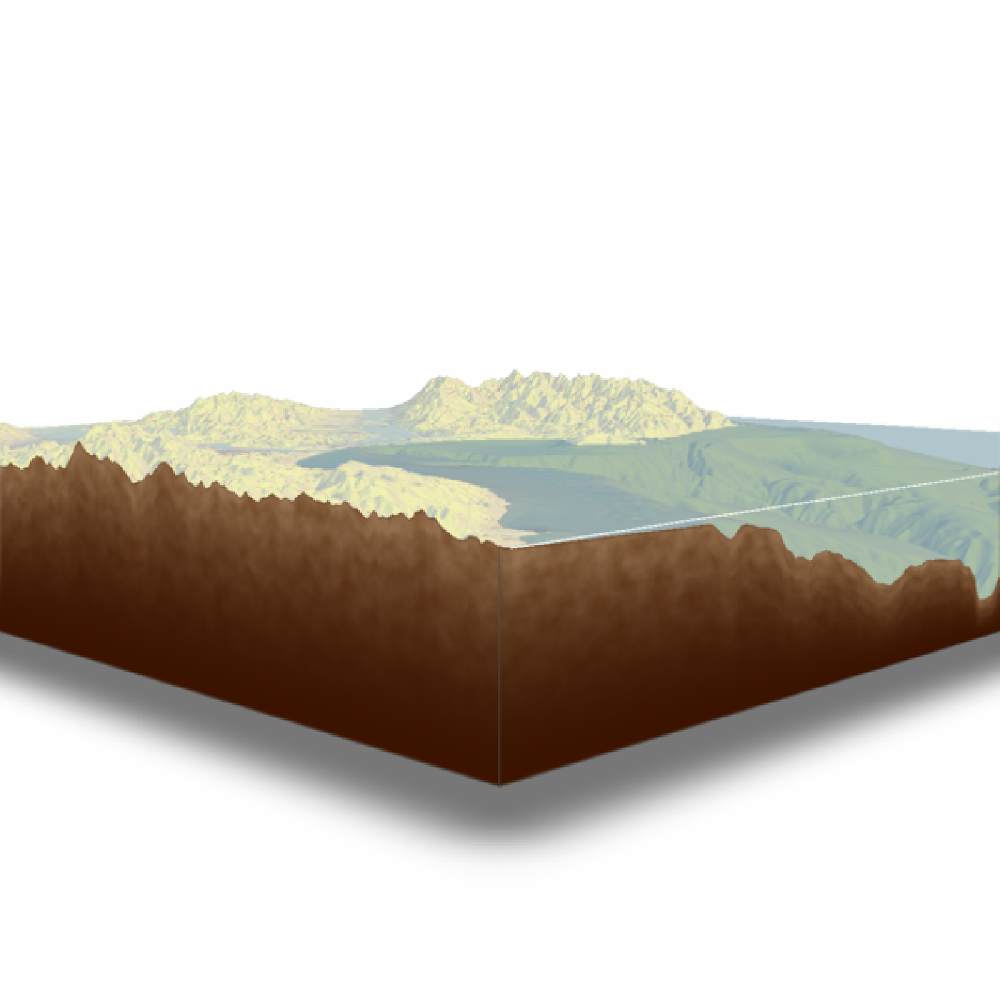
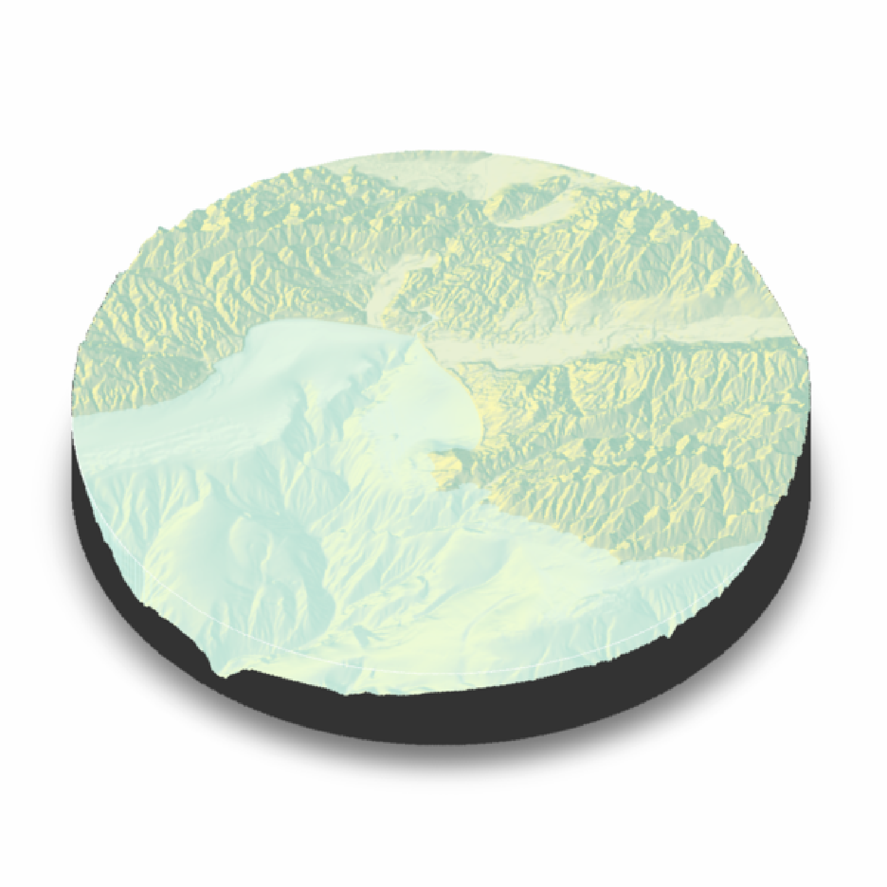
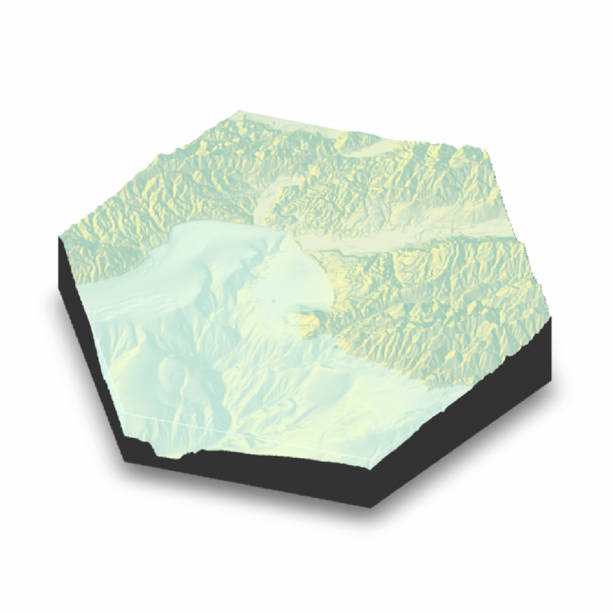

Displays the shaded map in 3D with the rgl package.
Note: Calling plot_3d() resets the scene cache for the render_snapshot(), render_depth(), and render_highquality()
plot_3d(
hillshade,
heightmap,
zscale = 1,
baseshape = "rectangle",
solid = TRUE,
soliddepth = "auto",
solidcolor = "grey20",
solidlinecolor = "grey30",
shadow = TRUE,
shadowdepth = "auto",
shadowcolor = "auto",
shadow_darkness = 0.5,
shadowwidth = "auto",
water = FALSE,
waterdepth = 0,
watercolor = "dodgerblue",
wateralpha = 0.5,
waterlinecolor = NULL,
waterlinealpha = 1,
linewidth = 2,
lineantialias = FALSE,
soil = FALSE,
soil_freq = 0.1,
soil_levels = 16,
soil_color_light = "#b39474",
soil_color_dark = "#8a623b",
soil_gradient = 2,
soil_gradient_darken = 4,
theta = 45,
phi = 45,
fov = 0,
zoom = 1,
background = "white",
windowsize = 600,
precomputed_normals = NULL,
triangulate = FALSE,
max_error = 0,
max_tri = 0,
verbose = FALSE,
plot_new = TRUE,
close_previous = TRUE,
clear_previous = TRUE
)Arguments
- hillshade
Hillshade/image to be added to 3D surface map.
- heightmap
A two-dimensional matrix, where each entry in the matrix is the elevation at that point. All points are assumed to be evenly spaced.
- zscale
Default
1. The ratio between the x and y spacing (which are assumed to be equal) and the z axis. For example, if the elevation levels are in units of 1 meter and the grid values are separated by 10 meters,zscalewould be 10. Adjust the zscale down to exaggerate elevation features.- baseshape
Default
rectangle. Shape of the base. Options arec("rectangle","circle","hex").- solid
Default
TRUE. IfFALSE, just the surface is rendered.- soliddepth
Default
auto, which sets it to the lowest elevation in the matrix minus one unit (scaled by zscale). Depth of the solid base. If heightmap is uniform and set onauto, this is automatically set to a slightly lower level than the uniform elevation.- solidcolor
Default
grey20. Base color.- solidlinecolor
Default
grey30. Base edge line color.- shadow
Default
TRUE. IfFALSE, no shadow is rendered.- shadowdepth
Default
auto, which sets it tosoliddepth - soliddepth/10. Depth of the shadow layer.- shadowcolor
Default
auto. Color of the shadow, automatically computed asshadow_darknessthe luminance of thebackgroundcolor in the CIELuv colorspace if not specified.- shadow_darkness
Default
0.5. Darkness of the shadow, ifshadowcolor = "auto".- shadowwidth
Default
auto, which sizes it to 1/10th the smallest dimension ofheightmap. Width of the shadow in units of the matrix.- water
Default
FALSE. IfTRUE, a water layer is rendered.- waterdepth
Default
0. Water level.- watercolor
Default
lightblue. Color of the water.- wateralpha
Default
0.5. Water transparency.- waterlinecolor
Default
NULL. Color of the lines around the edges of the water layer.- waterlinealpha
Default
1. Water line tranparency.- linewidth
Default
2. Width of the edge lines in the scene.- lineantialias
Default
FALSE. Whether to anti-alias the lines in the scene.- soil
Default
FALSE. Whether to draw the solid base with a textured soil layer.- soil_freq
Default
0.1. Frequency of soil clumps. Higher frequency values give smaller soil clumps.- soil_levels
Default
16. Fractal level of the soil.- soil_color_light
Default
"#b39474". Light tint of soil.- soil_color_dark
Default
"#8a623b". Dark tint of soil.- soil_gradient
Default
2. Sharpness of the soil darkening gradient.0turns off the gradient entirely.- soil_gradient_darken
Default
4. Amount to darken thesoil_color_darkvalue for the deepest soil layers. Higher numbers increase the darkening effect.- theta
Default
45. Rotation around z-axis.- phi
Default
45. Azimuth angle.- fov
Default
0–isometric. Field-of-view angle.- zoom
Default
1. Zoom factor.- background
Default
grey10. Color of the background.- windowsize
Default
600. Position, width, and height of thergldevice displaying the plot. If a single number, viewport will be a square and located in upper left corner. If two numbers, (e.g.c(600,800)), user will specify width and height separately. If four numbers (e.g.c(200,0,600,800)), the first two coordinates specify the location of the x-y coordinates of the bottom-left corner of the viewport on the screen, and the next two (or one, if square) specify the window size. NOTE: The absolute positioning of the window does not currently work on macOS (tested on Mojave), but the size can still be specified.- precomputed_normals
Default
NULL. Takes the output ofcalculate_normals()to save computing normals internally.- triangulate
Default
FALSE. Reduce the size of the 3D model by triangulating the height map. Set this toTRUEif generating the model is slow, or moving it is choppy. Will also reduce the size of 3D models saved to disk.- max_error
Default
0.001. Maximum allowable error when triangulating the height map, whentriangulate = TRUE. Increase this if you encounter problems with 3D performance, want to decrease render time withrender_highquality(), or need to save a smaller 3D OBJ file to disk withsave_obj(),- max_tri
Default
0, which turns this setting off and usesmax_error. Maximum number of triangles allowed with triangulating the height map, whentriangulate = TRUE. Increase this if you encounter problems with 3D performance, want to decrease render time withrender_highquality(), or need to save a smaller 3D OBJ file to disk withsave_obj(),- verbose
Default
TRUE, ifinteractive(). Prints information about the mesh triangulation iftriangulate = TRUE.- plot_new
Default
TRUE, opens new window with eachplot_3d()call. IfFALSE, the data will be plotted in the same window.- close_previous
Default
TRUE. Closes any previously openrglwindow. IfFALSE, old windows will be kept open.- clear_previous
Default
TRUE. Clears the previously openrglwindow ifplot_new = FALSE.
Examples
#Plotting a spherical texture map of the built-in `montereybay` dataset.
if(run_documentation()) {
montereybay |>
sphere_shade(texture="desert") |>
plot_3d(montereybay,zscale=50)
render_snapshot()
}

#With a water layer
if(run_documentation()) {
montereybay |>
sphere_shade(texture="imhof2") |>
plot_3d(montereybay, zscale=50, water = TRUE, watercolor="imhof2",
waterlinecolor="white", waterlinealpha=0.5)
render_snapshot()
}

#With a soil texture to the base
if(run_documentation()) {
montereybay |>
sphere_shade(texture="imhof3") |>
plot_3d(montereybay, zscale=50, water = TRUE, watercolor="imhof4",
waterlinecolor="white", waterlinealpha=0.5, soil=TRUE)
render_camera(theta=225, phi=7, zoom=0.5, fov=67)
render_snapshot()
}

#We can also change the base by setting "baseshape" to "hex" or "circle"
if(run_documentation()) {
montereybay |>
sphere_shade(texture="imhof1") |>
plot_3d(montereybay, zscale=50, water = TRUE, watercolor="imhof1", theta=-45, zoom=0.7,
waterlinecolor="white", waterlinealpha=0.5,baseshape="circle")
render_snapshot()
}

if(run_documentation()) {
montereybay |>
sphere_shade(texture="imhof1") |>
plot_3d(montereybay, zscale=50, water = TRUE, watercolor="imhof1", theta=-45, zoom=0.7,
waterlinecolor="white", waterlinealpha=0.5,baseshape="hex")
render_snapshot()
}

#Or we can carve out the region of interest ourselves, by setting those entries to NA
#to the elevation map passed into `plot_3d`
#Here, we only include the deep bathymetry data by setting all points greater than -10
#in the copied elevation matrix to NA.
mb_water = montereybay
mb_water[mb_water > -10] = NA
if(run_documentation()) {
montereybay |>
sphere_shade(texture="imhof1") |>
plot_3d(mb_water, zscale=50, water = TRUE, watercolor="imhof1", theta=-45,
waterlinecolor="white", waterlinealpha=0.5)
render_snapshot()
}